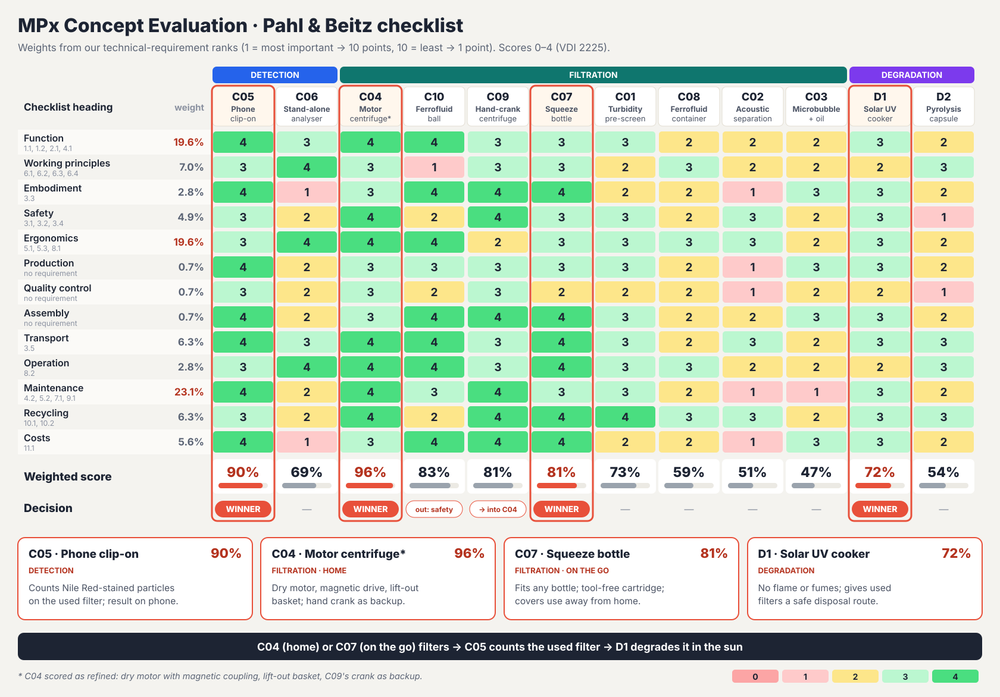
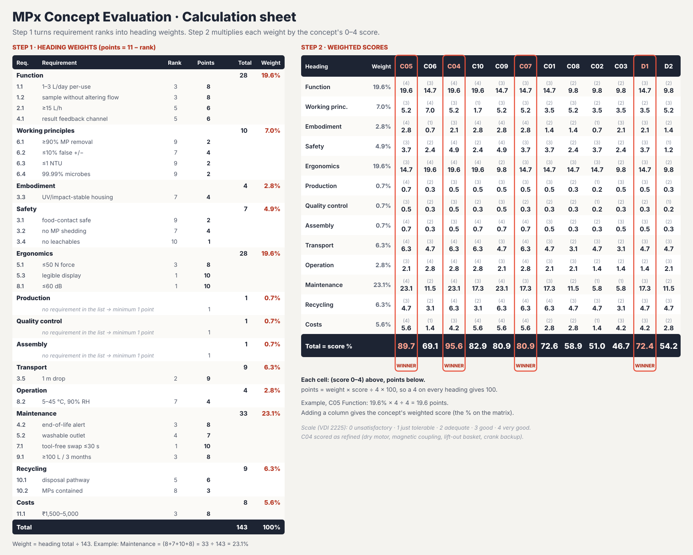

The system the evaluation chose
Motor centrifuge with a lift-out sleeve → MPx Spin
C07 · 81 %Filter on the goSqueeze bottle attachment → MPx Squeeze
C05 · 90 %Count the used filterPhone clip-on microscope, Nile red; now a Carson MP-250 on an iPhone with a size bar
D1 · 72 %Degrade it in the sunSolar photocatalytic cooker for the spent filter
The boil family (MPx Boil) was explored alongside as a no-consumable alternative to filtration.
Task clarification
What goes in and comes out, and the steps a user takes from water source to answer.


Function structure and objectives


Technologies per sub-function
Each sub-function, with the technologies, methods or interventions that could deliver it.


The full map
| Step No | Step Name | Category | Sub-Function | Technology / Method / Intervention Option |
|---|---|---|---|---|
| 01 | Identify Water Source | input | Sense / confirm source type (tap, bottle, jug, natural body) | Manual user selection — physical mode switch or app menu |
| 01 | Identify Water Source | input | Sense / confirm source type (tap, bottle, jug, natural body) | Conductivity / TDS probe to auto-classify source quality |
| 01 | Identify Water Source | input | Sense / confirm source type (tap, bottle, jug, natural body) | Camera + ML source recognition (stretch) |
| 01 | Identify Water Source | input | Sense / confirm source type (tap, bottle, jug, natural body) | No dedicated sensor — universal source-agnostic inlet |
| 01 | Identify Water Source | input | Present selectable source options to the user | Physical rotary or slide selector on the housing |
| 01 | Identify Water Source | input | Present selectable source options to the user | Companion mobile-app source picker |
| 01 | Identify Water Source | input | Present selectable source options to the user | Icon-based silkscreen selector ring |
| 01 | Identify Water Source | input | Verify source is compatible with the device (exclude unsuitable inputs) | Inlet screen / strainer as a size gate (excludes debris, insects) |
| 01 | Identify Water Source | input | Verify source is compatible with the device (exclude unsuitable inputs) | Conductivity threshold cutoff (flags saline / seawater) |
| 01 | Identify Water Source | input | Verify source is compatible with the device (exclude unsuitable inputs) | Pre-fill turbidity check, visual or optical, before accepting |
| 01 | Identify Water Source | input | Verify source is compatible with the device (exclude unsuitable inputs) | User acknowledgement / warning prompt (procedural, no sensor) |
| 01 | Identify Water Source | input | Signal source-dependent settings to downstream stages (e.g. expected turbidity) | Firmware profile switch — adjusts pump speed / detection sensitivity per source |
| 01 | Identify Water Source | input | Signal source-dependent settings to downstream stages (e.g. expected turbidity) | Simple lookup table triggered by the user’s source selection |
| 01 | Identify Water Source | input | Signal source-dependent settings to downstream stages (e.g. expected turbidity) | No adaptive signalling — fixed universal operating profile |
| 02 | Water Input in Device | input | Convey water from the source into the device | Gravity pour-in through an open funnel / hopper |
| 02 | Water Input in Device | input | Convey water from the source into the device | Straw / suction draw (syringe or vacuum primer) |
| 02 | Water Input in Device | input | Convey water from the source into the device | Direct tap or bottle quick-connect fitting |
| 02 | Water Input in Device | input | Convey water from the source into the device | Peristaltic or diaphragm pump draw-in |
| 02 | Water Input in Device | input | Connect / seal the input interface to the source | Universal funnel mouth — pour-in only, no seal needed |
| 02 | Water Input in Device | input | Connect / seal the input interface to the source | Threaded quick-connect fitting (garden-hose-style ball valve) |
| 02 | Water Input in Device | input | Connect / seal the input interface to the source | Snap-fit push-to-connect fitting with O-ring |
| 02 | Water Input in Device | input | Connect / seal the input interface to the source | Magnetic self-aligning collar |
| 02 | Water Input in Device | input | Regulate inflow rate and volume | Fixed-orifice flow restrictor |
| 02 | Water Input in Device | input | Regulate inflow rate and volume | Adjustable needle or ball valve |
| 02 | Water Input in Device | input | Regulate inflow rate and volume | Pump duty-cycle (PWM) control |
| 02 | Water Input in Device | input | Regulate inflow rate and volume | Passive overflow standpipe as a volume cap |
| 02 | Water Input in Device | input | Vent displaced air during filling | Vent hole with a hydrophobic membrane (blocks water, passes air) |
| 02 | Water Input in Device | input | Vent displaced air during filling | Open-top fill — inherently vented |
| 02 | Water Input in Device | input | Vent displaced air during filling | One-way air-relief valve |
| 02 | Water Input in Device | input | Measure / register input volume | Graduated sight window / markings on the housing (passive, zero power) |
| 02 | Water Input in Device | input | Measure / register input volume | In-line paddle-wheel or turbine flow sensor |
| 02 | Water Input in Device | input | Measure / register input volume | Load-cell / weight sensing at the base |
| 02 | Water Input in Device | input | Measure / register input volume | Capacitive or float fill-level sensor (see Step 05 options) |
| 02 | Water Input in Device | input | Prevent backflow or contamination re-entry | Silicone duckbill / umbrella one-way valve |
| 02 | Water Input in Device | input | Prevent backflow or contamination re-entry | Spring-loaded check valve |
| 02 | Water Input in Device | input | Prevent backflow or contamination re-entry | Air-gap inlet design — physical separation, no valve needed |
| 03 | Filter Microplastics | process | Convey water through the filter stage | Zero-power gravity-fed reservoir |
| 03 | Filter Microplastics | process | Convey water through the filter stage | Manual hand-pump / squeeze bulb |
| 03 | Filter Microplastics | process | Convey water through the filter stage | Motorised peristaltic pump |
| 03 | Filter Microplastics | process | Convey water through the filter stage | Motorised diaphragm / piston micro-pump |
| 03 | Filter Microplastics | process | Convey water through the filter stage | Stored-energy syringe / vacuum draw |
| 03 | Filter Microplastics | process | Convey water through the filter stage | Pre-charged spring or pressurised cartridge |
| 03 | Filter Microplastics | process | Separate coarse particles / debris (pre-filter) | Steel micro-mesh screen |
| 03 | Filter Microplastics | process | Separate coarse particles / debris (pre-filter) | Sand / gravel depth bed |
| 03 | Filter Microplastics | process | Separate coarse particles / debris (pre-filter) | Sintered ceramic candle pre-filter |
| 03 | Filter Microplastics | process | Separate microplastic particles by size or shape (fine filter) | Polymeric membrane — UF / NF |
| 03 | Filter Microplastics | process | Separate microplastic particles by size or shape (fine filter) | Ceramic UF membrane |
| 03 | Filter Microplastics | process | Separate microplastic particles by size or shape (fine filter) | Acoustic / resonant standing-wave focusing (incl. Acousweep) |
| 03 | Filter Microplastics | process | Separate microplastic particles by size or shape (fine filter) | Magnetic Fe₃O₄ nanoparticle capture |
| 03 | Filter Microplastics | process | Separate microplastic particles by size or shape (fine filter) | Electrostatic / electret capture |
| 03 | Filter Microplastics | process | Separate microplastic particles by size or shape (fine filter) | Hydrocyclone — no-media, flow-based |
| 03 | Filter Microplastics | process | Separate microplastic particles by size or shape (fine filter) | Dissolved-air / microbubble flotation |
| 03 | Filter Microplastics | process | Separate microplastic particles by size or shape (fine filter) | Coagulation-flocculation (alum/PACl or chitosan) |
| 03 | Filter Microplastics | process | Separate microplastic particles by size or shape (fine filter) | Electrocoagulation — Fe/Al sacrificial electrode |
| 03 | Filter Microplastics | process | Separate microplastic particles by size or shape (fine filter) | Bio-adsorbent media — mycelium mat, nanocellulose/chitosan sponge |
| 03 | Filter Microplastics | process | Regulate flow rate through the filter media | Fixed flow-restrictor orifice downstream of the filter |
| 03 | Filter Microplastics | process | Regulate flow rate through the filter media | Pump duty-cycle / PWM control |
| 03 | Filter Microplastics | process | Regulate flow rate through the filter media | Pressure-relief bypass valve |
| 03 | Filter Microplastics | process | Retain / trap separated particles within the media | Inherent to the chosen fine-filter mechanism above |
| 03 | Filter Microplastics | process | Retain / trap separated particles within the media | Backing support mesh + edge O-ring seal, prevents media bypass |
| 03 | Filter Microplastics | process | Retain / trap separated particles within the media | Cartridge housing with compression seal |
| 03 | Filter Microplastics | process | Indicate filter saturation or clogging | Differential-pressure sensor / switch across the filter |
| 03 | Filter Microplastics | process | Indicate filter saturation or clogging | Flow-rate drop-off timer (compares fill time to a baseline) |
| 03 | Filter Microplastics | process | Indicate filter saturation or clogging | Mechanical pressure-indicator disc, colour-change (N95-style) |
| 03 | Filter Microplastics | process | Indicate filter saturation or clogging | Manual replacement-schedule reminder via app or calendar, no sensor |
| 03 | Filter Microplastics | process | Allow filter element access / replacement | Twist-lock cartridge housing |
| 03 | Filter Microplastics | process | Allow filter element access / replacement | Tool-free snap-fit end cap |
| 03 | Filter Microplastics | process | Allow filter element access / replacement | Screw-cap housing with O-ring |
| 03 | Filter Microplastics | process | Allow filter element access / replacement | Quick-connect push-fit cartridge |
| 04 | Purification | process | Convey filtered water to the purification stage | Gravity-fed chamber |
| 04 | Purification | process | Convey filtered water to the purification stage | Shared pump line from the filtration stage |
| 04 | Purification | process | Convey filtered water to the purification stage | Static in-line flow-through tube |
| 04 | Purification | process | Expose water to a disinfection agent or energy source | UV-C LED array, ~265 nm — NSF Class A target ≥40 mJ/cm², Class B ≥16 mJ/cm² |
| 04 | Purification | process | Expose water to a disinfection agent or energy source | Traditional UV mercury lamp — higher output but larger, fragile, being phased out |
| 04 | Purification | process | Expose water to a disinfection agent or energy source | Chlorine or silver-ion dosing cartridge |
| 04 | Purification | process | Expose water to a disinfection agent or energy source | Electrochemical disinfection — in-situ chlorine generation via electrolysis |
| 04 | Purification | process | Expose water to a disinfection agent or energy source | Ozone micro-generator |
| 04 | Purification | process | Regulate exposure dose / time | Fixed-residence-time flow-through tube — dose set by geometry |
| 04 | Purification | process | Regulate exposure dose / time | Timed batch-hold cycle — valve closes, UV runs for a set duration |
| 04 | Purification | process | Regulate exposure dose / time | Flow-rate-linked LED intensity control — dose as a function of flow speed |
| 04 | Purification | process | Monitor treatment completion | UV sensor / photodiode feedback confirming LED output |
| 04 | Purification | process | Monitor treatment completion | Cycle-timer indicator, open-loop, no feedback |
| 04 | Purification | process | Monitor treatment completion | Residual chlorine test strip, for the chemical-dosing route |
| 04 | Purification | process | Neutralize or vent treatment by-products, if any | Not applicable for UV-C — no chemical by-product, a key advantage over chlorination |
| 04 | Purification | process | Neutralize or vent treatment by-products, if any | Activated-carbon polishing stage for the chlorine/ozone routes |
| 04 | Purification | process | Neutralize or vent treatment by-products, if any | Off-gas vent for the ozone route |
| 05 | Store Clean Water | process | Convey purified water into storage | Gravity drop into the reservoir |
| 05 | Store Clean Water | process | Convey purified water into storage | Continued pump-through into a sealed tank |
| 05 | Store Clean Water | process | Contain / hold the treated water volume | Rigid BPA-free copolyester / Tritan reservoir |
| 05 | Store Clean Water | process | Contain / hold the treated water volume | Food-grade stainless-steel tank |
| 05 | Store Clean Water | process | Contain / hold the treated water volume | Collapsible food-grade silicone bladder — compact / portable |
| 05 | Store Clean Water | process | Seal storage against recontamination | Screw-cap lid with silicone O-ring |
| 05 | Store Clean Water | process | Seal storage against recontamination | Snap-fit lid with gasket |
| 05 | Store Clean Water | process | Seal storage against recontamination | Self-sealing valve cap — opens only under suction or pressure |
| 05 | Store Clean Water | process | Indicate stored volume / level | Hydrostatic pressure sensor — cheapest, most power-efficient, best portable fit |
| 05 | Store Clean Water | process | Indicate stored volume / level | Float sensor / reed switch |
| 05 | Store Clean Water | process | Indicate stored volume / level | Capacitive level probe |
| 05 | Store Clean Water | process | Indicate stored volume / level | Ultrasonic level sensor — non-contact, but 10–100× more power draw |
| 05 | Store Clean Water | process | Indicate stored volume / level | Sight-glass / graduated window — zero power, passive |
| 05 | Store Clean Water | process | Preserve water quality over the storage period | UV-C LED periodic recirculation / idle-state disinfection pulse |
| 05 | Store Clean Water | process | Preserve water quality over the storage period | Opaque housing — blocks light, limits algae growth |
| 05 | Store Clean Water | process | Preserve water quality over the storage period | Silver-ion impregnated liner — passive antimicrobial |
| 05 | Store Clean Water | process | Preserve water quality over the storage period | UI reminder encouraging short storage duration (procedural) |
| 06 | Dispense Safe Drinkable Water | output | Convey water from storage to the outlet | Gravity-fed spout |
| 06 | Dispense Safe Drinkable Water | output | Convey water from storage to the outlet | Same pump line reused for dispensing |
| 06 | Dispense Safe Drinkable Water | output | Convey water from storage to the outlet | Dedicated small dispensing pump |
| 06 | Dispense Safe Drinkable Water | output | Actuate dispensing on user demand | Push-button / bite-valve spout (Sawyer / Grayl-style press-to-open) |
| 06 | Dispense Safe Drinkable Water | output | Actuate dispensing on user demand | Squeeze-bulb actuation |
| 06 | Dispense Safe Drinkable Water | output | Actuate dispensing on user demand | Tilt-to-pour, passive, no actuator |
| 06 | Dispense Safe Drinkable Water | output | Actuate dispensing on user demand | Touch-sensor-triggered electric valve |
| 06 | Dispense Safe Drinkable Water | output | Regulate dispensed flow rate / volume | Fixed-orifice spout nozzle |
| 06 | Dispense Safe Drinkable Water | output | Regulate dispensed flow rate / volume | Adjustable flow-control collar |
| 06 | Dispense Safe Drinkable Water | output | Regulate dispensed flow rate / volume | Portion-metered pump cycle — fixed volume per press |
| 06 | Dispense Safe Drinkable Water | output | Protect the dispensing point from contamination | Silicone one-way duckbill valve at the mouthpiece, prevents backwash |
| 06 | Dispense Safe Drinkable Water | output | Protect the dispensing point from contamination | Flip-cap dust cover over the spout |
| 06 | Dispense Safe Drinkable Water | output | Protect the dispensing point from contamination | Retractable / telescoping spout |
| 06 | Dispense Safe Drinkable Water | output | Stop / shut off flow after dispensing | Spring-return valve, auto-closes on release |
| 06 | Dispense Safe Drinkable Water | output | Stop / shut off flow after dispensing | Timed pump cutoff |
| 06 | Dispense Safe Drinkable Water | output | Stop / shut off flow after dispensing | Manual cap reseal |
| 07 | Collection of Microplastics | process | Branch / divert a sample stream from the main flow | T-junction bleed line with a micro-valve |
| 07 | Collection of Microplastics | process | Branch / divert a sample stream from the main flow | Sample port with syringe draw |
| 07 | Collection of Microplastics | process | Branch / divert a sample stream from the main flow | Bypass loop timed to open periodically |
| 07 | Collection of Microplastics | process | Convey the sample to the detection zone | Small-bore capillary tube, gravity- or pump-fed |
| 07 | Collection of Microplastics | process | Convey the sample to the detection zone | Dedicated micro-pump on the sample line |
| 07 | Collection of Microplastics | process | Convey the sample to the detection zone | Manual pipette transfer — lab-adjacent, less automated |
| 07 | Collection of Microplastics | process | Concentrate / isolate particles within the sample | Secondary fine mesh / membrane trap sized to the sample volume |
| 07 | Collection of Microplastics | process | Concentrate / isolate particles within the sample | Centrifugal micro-separation — miniaturised hydrocyclone-style |
| 07 | Collection of Microplastics | process | Concentrate / isolate particles within the sample | Settling / gravity concentration chamber |
| 07 | Collection of Microplastics | process | Hold sample volume steady for measurement | Fixed-volume flow-through cuvette / cell |
| 07 | Collection of Microplastics | process | Hold sample volume steady for measurement | Batch-hold micro-chamber with shutter valve |
| 07 | Collection of Microplastics | process | Hold sample volume steady for measurement | Continuous-flow tube — inline reading, no hold |
| 07 | Collection of Microplastics | process | Separate microplastics from other suspended solids | Fluorescent tagging (Nile Red) to optically distinguish plastics from organics |
| 07 | Collection of Microplastics | process | Separate microplastics from other suspended solids | Density-based separation — plastics vs. minerals |
| 07 | Collection of Microplastics | process | Separate microplastics from other suspended solids | Polymer-specific spectral signature (Raman / FTIR) to exclude non-plastic hits |
| 08 | Detection / Count Microplastics per Unit Volume | process | Sense presence of particles in the sample | Smartphone camera + fluorescence excitation, Nile Red staining |
| 08 | Detection / Count Microplastics per Unit Volume | process | Sense presence of particles in the sample | $10 clip-on microscope + camera |
| 08 | Detection / Count Microplastics per Unit Volume | process | Sense presence of particles in the sample | Turbidity / optical-density proxy sensor — cheap, but not MP-specific |
| 08 | Detection / Count Microplastics per Unit Volume | process | Sense presence of particles in the sample | UV-fluorescence flow-tube detector |
| 08 | Detection / Count Microplastics per Unit Volume | process | Distinguish microplastic particles from other debris | Nile Red fluorescence + colour/shape filtering |
| 08 | Detection / Count Microplastics per Unit Volume | process | Distinguish microplastic particles from other debris | YOLOv5 / YOLOv8 ML classification on captured images |
| 08 | Detection / Count Microplastics per Unit Volume | process | Distinguish microplastic particles from other debris | Electrostatic pretreatment + TOC discrimination |
| 08 | Detection / Count Microplastics per Unit Volume | process | Distinguish microplastic particles from other debris | Polymer-specific Raman / FTIR signature — lab-grade, likely too costly/bulky for portable |
| 08 | Detection / Count Microplastics per Unit Volume | process | Measure particle size and / or count | Image-processing pixel-to-size calibration, works with any camera-based method |
| 08 | Detection / Count Microplastics per Unit Volume | process | Measure particle size and / or count | Impedance / Coulter-counter-style particle sizing |
| 08 | Detection / Count Microplastics per Unit Volume | process | Measure particle size and / or count | Manual visual count under magnification — low-cost fallback |
| 08 | Detection / Count Microplastics per Unit Volume | process | Convert the sensed signal into quantifiable data | On-device microcontroller image processing — edge ML (TinyML-class chip) |
| 08 | Detection / Count Microplastics per Unit Volume | process | Convert the sensed signal into quantifiable data | Cloud / phone-app processing — offloads compute, avoids FLOro’s cost overrun |
| 08 | Detection / Count Microplastics per Unit Volume | process | Convert the sensed signal into quantifiable data | Simple threshold-comparator circuit, turbidity route only |
| 08 | Detection / Count Microplastics per Unit Volume | process | Normalize count to a per-unit-volume value | Firmware calculation using the known sample-chamber volume (Step 07) |
| 08 | Detection / Count Microplastics per Unit Volume | process | Normalize count to a per-unit-volume value | Calibration curve against reference standards |
| 08 | Detection / Count Microplastics per Unit Volume | process | Normalize count to a per-unit-volume value | Flow-rate-linked continuous count — particles/second × known flow rate |
| 08 | Detection / Count Microplastics per Unit Volume | process | Compare measured value against a safety threshold | On-device firmware threshold logic, simple pass/fail |
| 08 | Detection / Count Microplastics per Unit Volume | process | Compare measured value against a safety threshold | App-side comparison against the team’s 90% / 99% removal-efficiency target |
| 08 | Detection / Count Microplastics per Unit Volume | process | Compare measured value against a safety threshold | User-configurable sensitivity threshold |
| 08 | Detection / Count Microplastics per Unit Volume | process | Store / log the measurement | On-device flash memory log, timestamped readings |
| 08 | Detection / Count Microplastics per Unit Volume | process | Store / log the measurement | Companion-app cloud or local history log |
| 08 | Detection / Count Microplastics per Unit Volume | process | Store / log the measurement | No logging — instantaneous display only |
| 09 | Display Output | output | Receive processed detection data | Wired connection from the detection PCB to the display module |
| 09 | Display Output | output | Receive processed detection data | BLE / Wi-Fi link to a companion phone app |
| 09 | Display Output | output | Receive processed detection data | Direct analog signal to a simple indicator, no digital data |
| 09 | Display Output | output | Convert data into human-readable form | On-device firmware renders text / icons |
| 09 | Display Output | output | Convert data into human-readable form | Phone-app UI does all rendering, device just transmits raw data |
| 09 | Display Output | output | Convert data into human-readable form | Simple LED colour / blink-pattern code |
| 09 | Display Output | output | Present result to the user (visual / audio / haptic) | E-paper / e-ink screen — near-0 static power, sunlight-readable, best for infrequent updates |
| 09 | Display Output | output | Present result to the user (visual / audio / haptic) | Memory LCD (MIP) — 1–5 µW static, supports scrolling/animation, weeks–months battery life |
| 09 | Display Output | output | Present result to the user (visual / audio / haptic) | PMOLED — higher power, best contrast/speed, poor sunlight readability |
| 09 | Display Output | output | Present result to the user (visual / audio / haptic) | Simple RGB LED indicator array — lowest cost/power, coarse info only |
| 09 | Display Output | output | Present result to the user (visual / audio / haptic) | Buzzer / audio alert — fits the 30% of quiz respondents who want no visible detail |
| 09 | Display Output | output | Present result to the user (visual / audio / haptic) | Haptic vibration alert |
| 09 | Display Output | output | Allow switching between simple and detailed views | Physical toggle button / switch |
| 09 | Display Output | output | Allow switching between simple and detailed views | App-side settings menu |
| 09 | Display Output | output | Allow switching between simple and detailed views | Long-press gesture on a single button |
| 09 | Display Output | output | Indicate alert status if a threshold is exceeded | Dedicated red LED / icon flash |
| 09 | Display Output | output | Indicate alert status if a threshold is exceeded | Audible alarm chirp |
| 09 | Display Output | output | Indicate alert status if a threshold is exceeded | Push notification via the companion app |
Morphological matrix
Detection options per parameter, and example paths through the matrix. Numbers in brackets are the literature references.
| Parameter | Option 1 | Option 2 | Option 3 | Option 4 | Option 5 |
|---|---|---|---|---|---|
| P1 — Sampling interface | Inline flow-through tube [5] | Discrete filtered/stained sample [1,3,14,15] | Dip / immersed probe [4] | Multi-stage pretreatment loop [6] | |
| P2 — Excitation / interrogation | UV/blue fluorescence (dye) [1,3,14,15] | Plain optical imaging, no dye [2] | Electrochemical impedance [7] | Passive — no active stimulus [4] | |
| P3 — Transducer / sensor | Smartphone camera + attachment [1,2] | Dedicated USB microscope [3,15] | Discrete photodetector [4,5] | Electrode / potentiostat [7] | Lab spectrometer / SEM (reference) [8-12] |
| P4 — Signal processing | CNN object detection (YOLO) [2,3] | RGB decision-tree (CART) [14] | Threshold / peak-detection electronics [4,5] | ML on impedance signal [7] | Manual visual read [13] |
| P5 — Compute platform | Raspberry Pi / SBC [3] | Smartphone onboard [1,2] | Microcontroller + Wi-Fi [4] | Benchtop instrument controller [6,8-12] | Laptop, offline [14,15] |
| P6 — Result communication | Onboard touchscreen [3] | Smartphone app [1,2] | LED / buzzer indicator (unlisted — grounded in req. 4.1) | Cloud dashboard / IoT [4] | Log only, read later [15] |
Example paths
| Path | Title | P1 | P2 | P3 | P4 | P5 | P6 | Verdict |
|---|---|---|---|---|---|---|---|---|
| Path A | Budget Screen | Inline flow-through tube [5] | Plain optical imaging, no dye [2] | Smartphone camera + attachment [1,2] | CNN object detection (YOLO) [2,3] | Smartphone onboard [1,2] | Smartphone app [1,2] | Cost fit yes, likely non-invasive yes, accuracy plausibly good (inherits [2]'s 98%) — but the size range this specific optical path can actually resolve is untested and needs a bench trial before trusting it. |
| Path B | Two-Stage Screen + Confirm (standout recommendation) | Dip/immersed probe [4] (stage 1) + discrete filtered/stained sample [1,3] (stage 2, on trigger) | Passive [4] (stage 1) + UV/blue fluorescence [1,3] (stage 2) | Discrete photodetector [4] (stage 1) + smartphone camera or USB microscope [1,3] (stage 2) | Threshold/peak-detection electronics [4] (stage 1) + CNN object detection [3] (stage 2) | Microcontroller + Wi-Fi [4] | Cloud dashboard/IoT [4], escalating to onboard touchscreen or app on trigger | Cheapest average running cost (expensive stage runs rarely), solves the two biggest documented weaknesses in the literature set at once. Worth prototyping first. |
| Path C | Lab-Adjacent Bench Confirm | Multi-stage pretreatment loop [6] | UV/blue fluorescence (dye) [3] | Dedicated USB microscope [3] | CNN object detection (YOLO) [3] | Raspberry Pi / SBC [3] | Onboard touchscreen [3] | Cost fit no for a portable product, but plausibly yes for a fixed-installation concept — keep on the table only if the form-factor decision goes that way. |
Concept sketches
Click any sheet to read it at full size.


Evaluation · Pahl & Beitz checklist
Weights from the technical-requirement ranks (1 = most important → 10 points), scores 0–4 (VDI 2225).




Detection methods compared
The literature methods for detecting microplastics, by tier, and how they rank for a low-cost portable device.


Ranking
| Method | Composite (/5) | Cost fit (detect-module slice) | Size fit (~10 µm target) | One-line verdict |
|---|---|---|---|---|
| $10 microscope clip + YOLOv5 [2] | 4.3 | fits (~₹955) | not stated | Best composite score and cheapest — but needs its own size-range test before trusting it. |
| Nile Red + YOLOv8 "FLOro" [3] | 4.3 | over (~₹13,300) | misses (>100 µm) | Best-documented full system, but hardware cost alone exceeds the whole product's retail budget. |
| Smartphone fluorescence + Nile Red [1] | 3.8 | over (~₹47,750) | meets (≥10 µm) | Only method that actually hits the 10 µm target — but prototype cost is the highest of the portable group. |
| Nile Red + RGB decision-tree [14] | 3.0 | N/A (reference-only) | misses (50–1200 µm) | Strong lab accuracy; not a candidate for the product itself, useful as a validation method. |
| MicroplasticLab image processing [15] | 2.9 | N/A (reference-only) | misses (>0.4 mm) | Free software, but lab-only hardware and no polymer ID. |
| UV-fluorescence flow-tube (patent) [5] | 2.7 | unknown | not stated | Inline/non-invasive by design — but no independent performance data exists yet. |
| IoT turbidity proxy "TEMPT" [4] | 2.5 | borderline (~₹2,500) | N/A (proxy, not size-based) | Cheapest always-on option, but authors themselves say it isn't microplastic-specific. |
| FTIR spectroscopy [8] | 2.5 | N/A (reference-only) | close (~20 µm) | Reference/validation method only — not embeddable in a portable product. |
| ICP-MS [10] | 2.5 | N/A (reference-only) | N/A (mass-based) | Reference/validation method only. |
| Optical counter + electrostatic + TOC (patent) [6] | 2.3 | unknown | not stated | Reads as benchtop-complex; four pretreatment stages before any measurement. |
| Electrochemical sensing [7] | 2.1 | unknown | ambiguous units in source | Promising in principle (review calls it low-cost/portable) but still single-polymer lab prototypes. |
| Raman spectroscopy [9] | 2.0 | N/A (reference-only) | (~1 mm per this review) | Reference/validation method only. |
| SEM-EDX [11] | 2.0 | N/A (reference-only) | (nm-scale, overkill) | Reference/validation method only. |
| Pyrolysis GC-MS [12] | 2.0 | N/A (reference-only) | N/A (bulk/mass method) | Reference/validation method only, destructive. |
| Visual microscopy (manual) [13] | 1.0 | N/A (reference-only) | misses (poor <20 µm) | Lowest score — 22-lab study found only ~51% recovery even above 50 µm. |
Full comparison
| Tier | Method | Principle | Detects | Equipment & sample prep | Cost | Throughput | Accuracy / detection limit | Portability | Key limitations |
|---|---|---|---|---|---|---|---|---|---|
| A — Portable/low-cost candidate | Smartphone fluorescence + Nile Red [1] | Custom 3D-printed phone attachment (4 blue LEDs 450–495 nm + emission filter + 25 mm achromatic lens) images Nile-Red-stained, filtered particles. · MATLAB algorithm extracts red fluorescence channel to count & size. | PS, PP, PET fluoresce well; does NOT detect black rubber/tire particles. · No chemical polymer ID — fluorescence-based only. · Reliable ≥10 µm (FOV ~490 mm², pixel ~4.7 µm). | Smartphone (Nokia Lumia 1020-class, 48 MP) + custom LED/lens attachment + battery · 24 mm glass-fibre filter (1.2 µm), Nile Red 0.5 µg/mL in chloroform, vacuum filtration · KI density separation + centrifuge for soil/solid matrices · Sample prep: filter → stain → 24 h air-dry (or faster vacuum-dry) → image | Prototype ≈ US$500 · "orders of magnitude" less than bench fluorescence microscopes | <1 h/sample (excl. 24 h dry step) · >50 samples/person/day | Linear response to 135 particles/L (p<0.001) · Above that: aggregation → underestimation · Reliable down to 10 µm | Inherently portable — battery-powered LEDs, no mains power · Framed for resource-limited field use | Misses black/rubber particles · Needs >10 µm · High debris load needs dilution · No chemical polymer confirmation |
| A — Portable/low-cost candidate | $10 microscope clip + YOLOv5 [2] | $10 "TinyScope" clip-on microscope on an ordinary phone camera images density-separated, filtered MP. · ImageJ thresholds to binary; YOLOv5 CNN (COCO transfer-learned) detects/counts by texture/edge, not colour. | Presence/count + coarse morphology (fibre vs fragment, SEM cross-check) · No automated polymer ID or precise sizing by the DL model itself · Polymer ID confirmed separately via ATR-FTIR/SEM in the study, not by the field method | $10 TinyScope clip-on + smartphone · ImageJ, Label Studio, PyTorch/Colab+GPU (training only) · ZnCl₂ (1.7 g/cm³) density separation, H₂O₂ digestion, Whatman filter, vortex + ultrasonic bath · Confirmatory-only (not routine): ATR-FTIR, FE-SEM | $10 attachment · (cited competing fluorescence-microscope prototype: ~$500) | Extraction <1 h · Real-time/live video detection demonstrated | 98% overall detection accuracy · Recall ~0.90, precision ~0.85, mAP@50 0.935 · (2490 images / 9113 annotations) | Imaging step is field-cheap · But full workflow still needs vortex mixer, ultrasonic bath, GPU for training | No true-negative baseline (can't compute specificity) · 431 false positives (dark pixels misread as MP) · Single-class model — no polymer/size/shape output |
| A — Portable/low-cost candidate | Nile Red + YOLOv8 portable box ("FLOro") [3] | 3D-printed enclosure: USB digital microscope + 395 nm UV flashlight + yellow long-pass filter (blocks <550 nm) + Raspberry Pi 4 running onboard YOLOv8 + 3.5" touchscreen + power bank. | 6 polymers: ABS, Nylon, PE, PET, PS, PVC · 50–1000 µm fragments/powders · Count + bounding-box polymer ID · LOD >100 µm (microscope-resolution limited) | USB digital microscope, 395 nm UV flashlight (2400 mAh), yellow long-pass filter, Raspberry Pi 4, 3.5" TFT touchscreen, Eloop EW35 power bank (10,000 mAh), PLA 3D-printed case · Nile Red (>98% HPLC), acetone, Whatman No.1 filter (11 µm), vacuum filtration · Prep: 5 g sample/20 mL water, filter, air-dry 15 min, 0.025 mg/mL Nile Red in acetone (10 drops), dark-incubate 15 min | Itemised BOM: fixed hardware $139.60 total (microscope $11.26, UV flashlight $5.41, filter $11.44, RPi4 $62.35, touchscreen $14.85, power bank $20.29) · Variable cost ≈ $0.10/test · cf. FTIR ≈$0.44/sample + $30,000–50,000 capital | ~19 s/image (real-time on-device inference) | mAP@50 0.941(train)/0.948(test) · Precision 0.878/0.888, Recall 0.879/0.882, F1 0.878/0.885 · Best: PE/Nylon 0.965; worst: PET 0.930 | 22×23×20 cm box · Power bank, 3–4 h runtime · Field-deployable | >100 µm only · Untested on weathered/pigmented real plastics · Needs 10–40°C + low light (NR photobleaching) · Only 6 polymers validated · Manual staining → operator variability |
| A — Portable/low-cost candidate | IoT turbidity proxy sensor ("TEMPT") [4] | Optical light-scattering (nephelometric) turbidity sensor + Arduino/ESP8266 + Wi-Fi. · ADC-converted voltage mapped to NTU/turbidity category; a paired ML layer (ABGBT) classifies contamination risk. | NOT microplastic-specific — general particulate/clarity proxy (silt, algae, organics also raise turbidity) · 0–100 NTU range, 4 categories · The paper's own "MP detection" labels are turbidity-threshold-derived, not lab-confirmed | Arduino Uno / ESP8266/ESP32, analog turbidity sensor, Wi-Fi module, 16×2 LCD, external power · No filtration/staining — direct in-situ reading | Device ≈ ₹2,500 · (cited comparators: multi-camera system ₹7,000; microscope-based system ₹20,000) | Continuous real-time monitoring · (no numeric response-time given) | Raw sensor: no NTU-level accuracy stated · Classification layer (ABGBT): 91.47% accuracy, 5.40% error, 90% noise tolerance | Lightweight, low-power, Wi-Fi telemetry · Field-deployable | Explicitly NOT material-specific, per the authors · No validated NTU↔MP-concentration calibration curve exists yet (future work only) · Authors frame it as a pre-screening tool only, not a replacement for FTIR/Raman/microscopy |
| A — Portable/low-cost candidate | UV-fluorescence flow-tube detector (patent) [5] | Water flows continuously through a transparent 2–4 mm sample tube. · Pulsed UV light focused via 2 collimating lenses into the tube; a photodetector on the opposite side captures particle fluorescence through a filter blocking the source UV wavelength. · Onboard unit counts particles via fluorescence-lifetime filtering + peak detection for aggregates. | Continuous-flow real-time particle counting via fluorescence · Excerpt available doesn't specify a dye/staining step | Sample tube, UV source + 2 collimating lenses, photodetector + 2 focusing lenses + blocking filter, signal-processing unit | Not stated — patent document, no BOM pricing | Real-time (continuous flow), no numeric figure given | Not stated in the patent excerpt | Compact flow-cell architecture, plausibly miniaturisable · No product-scale detail given (patent only, not a built/tested device) | Patent document only — no independent performance data · Dye/staining step, if any, not specified |
| A — Portable/low-cost candidate | Optical counter + electrostatic pretreatment + TOC (patent) [6] | 4-stage benchtop pipeline: ceramic pre-filter concentrates MPs → H₂O₂ oxidises interfering organics → electrostatic precipitator (charged plates) isolates neutral MP from remaining organics → backwash recovers concentrated sample. · Then: optical particle counter (light-scattering) for real-time size/count, and a TOC analyzer oxidises MPs, measuring released CO₂ as a mass-concentration index. | Particle count + size distribution (optical) · + total mass concentration (via TOC/CO₂ proxy) | Ceramic filter, H₂O₂ dosing, electrostatic precipitator, optical particle counter, TOC analyzer, backwash plumbing | Not stated — patent document | Not stated | Not stated | 4-stage pretreatment chain reads as benchtop/instrument-grade complexity · Not a pocket-portable design as claimed in the patent | Patent document only — no independent performance data · High mechanical/process complexity for a portable consumer device |
| A — Portable/low-cost candidate | Electrochemical sensing (EIS / impedance / amperometric) [7] | MP particles colliding with, adsorbing onto, or passing between electrodes perturb impedance, capacitance or current. · Several distinct lab implementations exist: graphene EIS electrodes, EPS-functionalised gold electrodes, microbial-biofilm electrochemical systems, single-particle ultramicroelectrode collision counting. | Polymer- and study-specific — reported cases include PS, PE, PMMA, nylon, PVC · No single implementation yet covers all common polymers · (one source table's size units read as µm/mm ambiguously — likely an OCR artifact in the original PDF; verify before quoting precisely) | Varies: graphene / gold / carbon-fibre / Pt ultramicroelectrode, reference & counter electrodes, potentiostat / impedance analyzer · Reviewers' framing: "requires no complex sample isolation or purification beforehand" | Not quantified in the review · Framed qualitatively as low-cost vs FTIR/Raman/ICP-MS | Not quantified generally · "quick response times" per the review | Reported detection limits across different studies: 0.09 mg/mL; 50 ppb (pure/tap water), 400 ppb (saline); ~10³–10⁴ particles/mL; 0.01 mg/L; 0.03 mM; down to 10⁻¹¹ M | Review frames as inherently portable/field-capable · But this is an emerging research area, not yet a mature off-the-shelf product | Mostly single-polymer, lab-electrode proof-of-concept studies · No standardised protocol yet · Review itself flags this as "a notable gap in research" |
| B — Lab-grade reference | FTIR spectroscopy [8] | Fourier-pair relationship between spectrum and interferogram. · IR light through a Michelson interferometer is absorbed by molecular bonds at specific frequencies → functional-group fingerprint. | Functional groups (polymer type via spectral-library match), not individual molecules · Limited by particle size and substrate contamination · Review cites theoretical spatial resolution ~20 µm | Bench FTIR spectrometer, often with ATR or microscope attachment | ₹3,000–4,000/sample (IIT Guwahati, Dept. of Chemical Engineering fee schedule) · Capital cost cited in the review: benchtop from ~US$25,000; particle-finder systems US$100,000–250,000 | Not quantified here | "Safe, non-destructive, highly specific to certain polymer types" (review's own framing) | Lab-only, bench instrument | Only functional groups, not full molecular ID · Size-limited · Substrate contamination risk |
| B — Lab-grade reference | Raman spectroscopy [9] | Laser-induced scattering generates a fingerprint spectrum. · Qualitative ID by comparing chemical structure to reference spectra. | High depth resolution; accurate ID even at very small particle sizes · Review cites theoretical spatial resolution ~1 mm — coarser than the FTIR figure in the same source; worth independent verification before quoting, since Raman is more commonly reported as sub-micron-capable elsewhere | Bench Raman spectrometer + laser source | ₹200–5,000/sample (MNIT Jaipur, Materials Research Centre facility charges) · Capital cost cited in the review: from ~US$50,000 | "Longer analysis times" per the review, no number given | High depth resolution per the review's framing | Lab-only, bench instrument | Affected by dyes/additives/fluorescence → signal interference · Longer analysis times, difficult identification |
| B — Lab-grade reference | ICP-MS [10] | High-temperature argon plasma atomises/ionises the sample. · Mass spectrometry on specific m/z values (e.g. ¹³C⁺) detects and quantifies individual particles. | Ultra-low concentrations; particle count, size distribution, elemental composition · Source ID via isotope analysis · Example cited: single-particle ICP-MS detection limit 8.4×10⁵ particles/L | ICP-MS instrument | Not stated | "Faster results than microscopy" per the review, no number given | Ultra-low detection concentrations per the review's framing | Lab-only, high-end instrument | Carbon-based MP detection hindered by other carbon sources (organics, microbes) · Interfering elements need calibration, often confirmed by FTIR/Raman anyway |
| B — Lab-grade reference | SEM-EDX [11] | SEM images particle morphology. · EDX (energy-dispersive X-ray) determines elemental composition. | Morphology + elemental composition (aids polymer ID) · Contaminant adsorption / toxicity assessment | SEM with EDX detector, sputter coater | Not stated | Time-consuming sampling per the review | Detailed morphology imaging; elemental ID aids polymer identification | Lab-only, high-end instrument | Time-consuming sampling · Elemental detection limits affect trace/tiny MP analysis · Similar elemental compositions can hinder differentiation |
| B — Lab-grade reference | Pyrolysis GC-MS [12] | Thermal degradation into volatile compounds, separated by chromatography, identified by mass-to-charge ratio. | Polymer type ID; works across salt/soil/sediment/water with minimal interference from colour/size/shape/additives · Small sample needed | Pyrolysis unit + GC-MS | Not stated | Not quantified | Requires only a small sample; minimal matrix interference for polymer typing | Lab-only, high-end instrument | Identifying ALL polymer types is challenging (matrix/thermal-degradation effects) · Needs internal standards · Destructive — tiny (~1.5 µL-scale) single-use capsule |
| B — Lab-grade reference | Visual microscopy (manual) [13] | Manual sorting/counting/characterisation of size-fractionated particles (1–20, 20–212, 212–500, >500 µm sieves) under a bench microscope, by trained analysts, per SOP. | Cannot confirm polymer identity alone — needs follow-up FTIR/Raman/Py-GC-MS · Most reliable >50 µm; poor for <20 µm | Light/stereo microscope, sieves, PCTE filters | Not quantified — only "relatively inexpensive" vs spectroscopic/imaging tech, per the paper | Not quantified (survey collected timing data but no number reported in text) | 22-lab / 6-country blind study: raw mean recovery 45.7%; QA-corrected recovery >50 µm = 51.3%±21.7% · Sphere recovery best (95.9%); fibre recovery wildly over-reported (462.4%) · Colour misID: orange→"gold" 79.4% of the time; white→"clear" 71.1% · False positives: mean 16/median 11 of 80 spiked look-alikes called MP, per sample · Analyst experience did NOT significantly improve recovery (only precision) | Lab-only | Strong subjectivity, high inter-lab variability · Poor for <20 µm · Cannot confirm polymer ID alone |
| B — Lab-grade reference | Nile Red staining + RGB decision-tree ID [14] | Nile Red (hydrophobic, solvatochromic dye) binds plastic surfaces and fluoresces, emission shifting with polymer polarity. · Particles photographed under UV/blue/green filters; RGB pixel stats along max Feret diameter feed two decision-tree models (plastic-detection, polymer-ID). | 7 polymers validated (nylon, PE, PET, PP, PS, PUR, PVC) vs 10 natural materials · 50–1200 µm range · PP is the weak spot — confused with PE, sometimes missed entirely · UV filter alone can't separate plastic from fluorescing natural material (chitin/fibre co-staining, only partially solved) | Fluorescence microscope + camera + UV/blue/green filters (e.g. Leica DM1000), PTFE filters (10 µm), Nile Red 10 µg/mL in acetone, ImageJ + R (CART decision trees) · Independent polymer confirmation via µ-FTIR | Equipment <US$10,000 (microscope+camera+filters) · Consumables <US$5/filter · cf. benchtop FTIR from US$25k, FTIR particle-finder US$100–250k, Raman from US$50k | ~2.5 min image + ~5 min classify per series · 20-particle sample ≈55 min vs 170 min for µ-FTIR (3–6× faster) · Whole-filter stereomicroscope imaging: ~13 min/20-MP sample | Plastic-Detection Model: 95.8% CCI (κ=0.92) validation; 92.8% on spiked samples · Polymer-ID Model: 88.1% CCI (κ=0.86) validation; 80% on spiked samples · cf. µ-FTIR ~96±7% | Lab-based (microscope, filtration manifold, computer) · Authors frame LOW COST — not portability — as the accessibility win | PP misclassification · NR co-stains chitin/natural fibres (unresolved false-positive risk) · Untested on naturally-weathered/biofouled field MPs |
| B — Lab-grade reference | Automated fluorescence image processing ("MicroplasticLab") [15] | UV-photographed (365 nm) filter membranes processed by an open-source Python tool (MUPL): per-channel segmentation, median-filter background removal, Canny edge detection, skeletonisation for length/thickness/shape classification. | No polymer ID (colour/fluorescence only) · Validated for FIBRES 0.4–10 mm (400–10,000 µm) — below 0.4 mm, resolution unreliable · Outputs count + morphological sizing, not just presence/absence | Leitz ORTHOLUX II microscope + DeltaPix camera (validation only); Sony ILCE-7RM3 SLR + Zeiss 100 mm macro + tripod rig (main photography) · Alonefire SV10 365 nm 5W UV flashlight (mains-wired) · Glass-fibre filters, optional Nile Red, 30% H₂O₂ digestion · MUPL software (Python/OpenCV/scikit-image, MIT licence, free) | Not stated — software is free/open-source; hardware costs not itemised | ~10 s/image automated processing | Artificial samples: ≤13.3% deviation vs manual ImageJ count (avg <8%) · Real samples: <15–29.4% deviation (avg 10.9% unstained, improves to 8.0–8.3% with Nile Red) | Explicitly lab-only — needs a controlled dark room, mains-powered UV lamp, stabilised camera rig · Authors frame in-situ field use only as a future aspiration | No polymer ID · Misses <0.4 mm particles · Fluorescent mineral fractions can inflate counts · Sensitive to camera settings/timing/lighting |
Path B · two-stage screen and confirm
What you can do
- Follow the escalation from the always-on screen sensor to the confirm stage
What it reads out
- Which documented method each stage borrows from
The model behind it
An always-on turbidity proxy wired to a microcontroller that only wakes the expensive fluorescence-and-YOLO confirm stage when the screen flags a spike.
Value proposition canvas
What you can do
- Read gains, pains and jobs against the product's gain creators and pain relievers
What it reads out
- Survey figures behind each point
The model behind it
Built from the stakeholder survey that runs on the main page of this site.